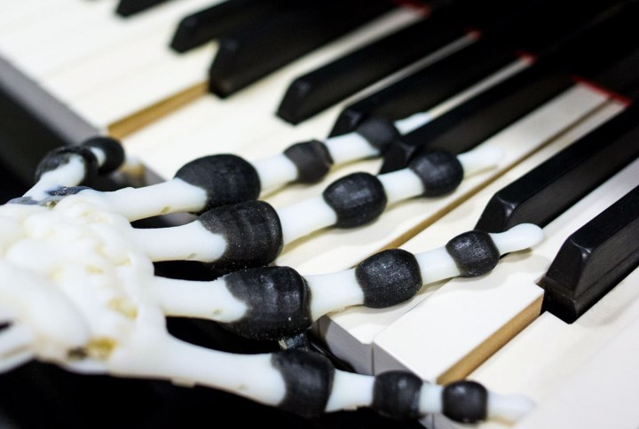
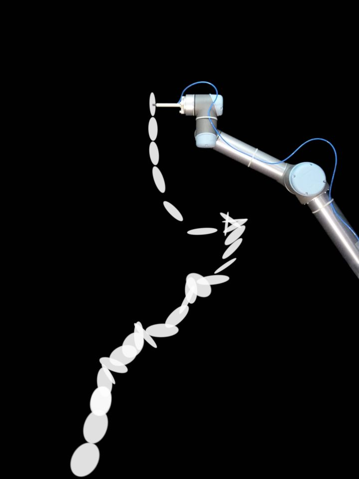
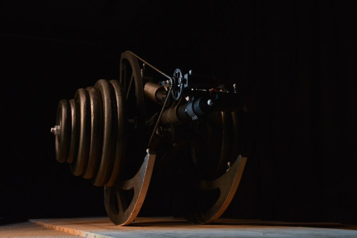

We study intelligence at the intersection of robotics and biology. By exploring how bodies, materials and their environments work together, we develop robots that are more adaptive, resilient and energy efficient.


